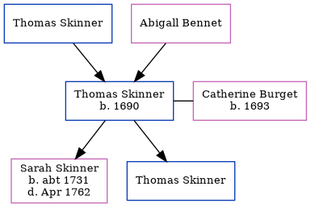

Thomas Skinner 1690 -
[ Home ] | [ Calendar ] | [ Surnames Index ] | [ Census Index ] | [ Family History ]The child of Thomas Skinner and Abigall Bennet, Thomas Skinner, the 6 times great-grandfather of Nigel Horne, was born in Elham, Kent, England in 16901, was baptized in Kent, England on Mar 7, 1690 and married Catherine Burget (with whom he had 2 children: Sarah and Thomas) in Dover, Kent, England on Nov 23, 17182.
Parents
Children
- Sarah was born c. 1731
- Thomas was born c. 11 Oct 1719
Citations
- Kent, England, Tyler Index to Parish Registers, 1538-1874 Online publication - Provo, UT, USA: Ancestry.com Operations, Inc., 2010. This collection was indexed by Ancestry World Archives Project contributors.Original data - Frank Watt Tyler. The Tyler Collection. Canterbury, Kent, England: The Institute of Herald
- England Marriages 1538-1973 - Findmypast
Media
England Marriages 1538-1973 - R_847820058
Family Tree
Generated by ged2site. Last updated on Jun 11, 2024